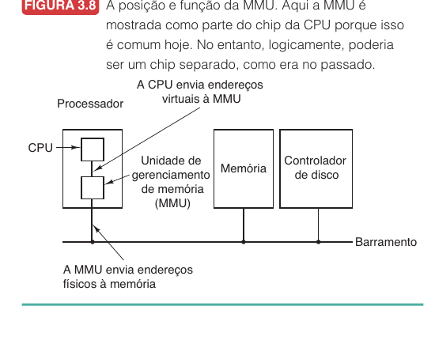
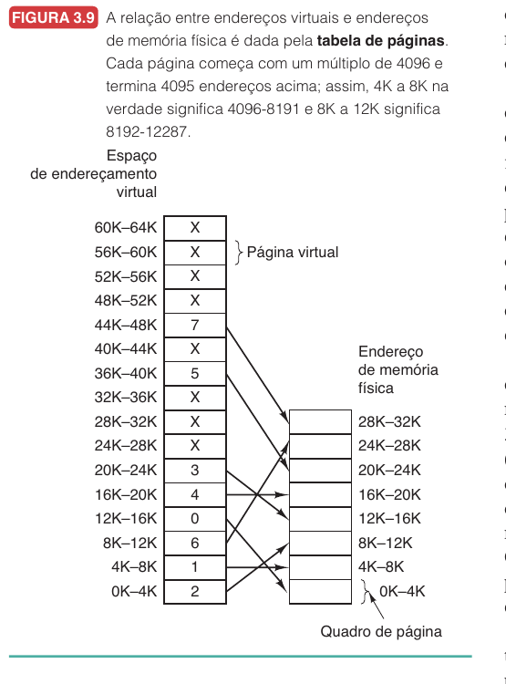
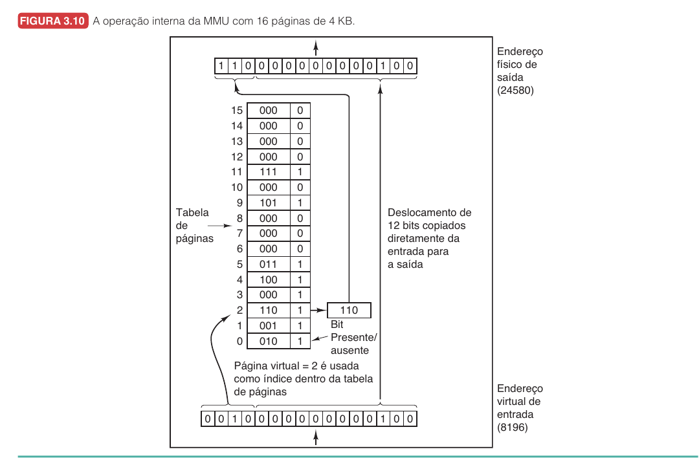
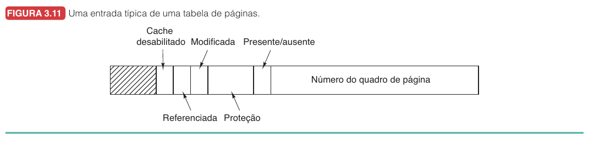
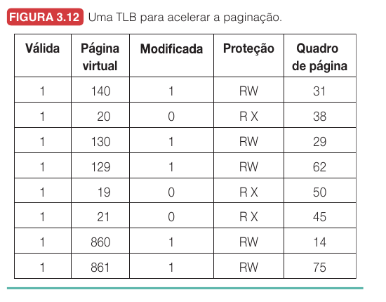
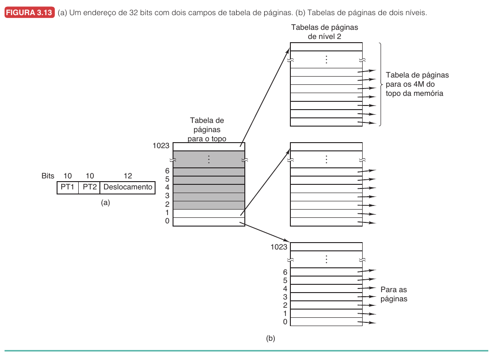
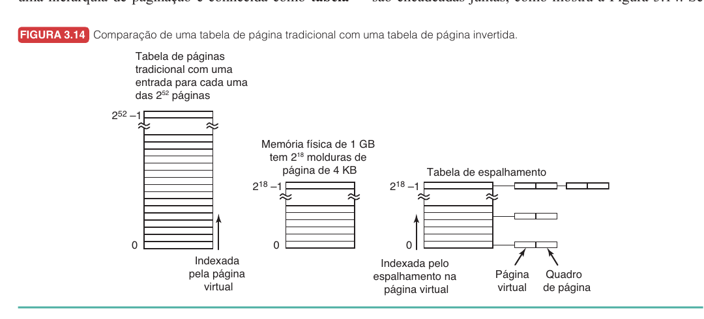
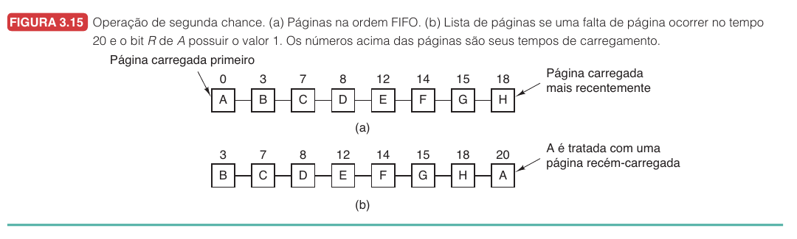
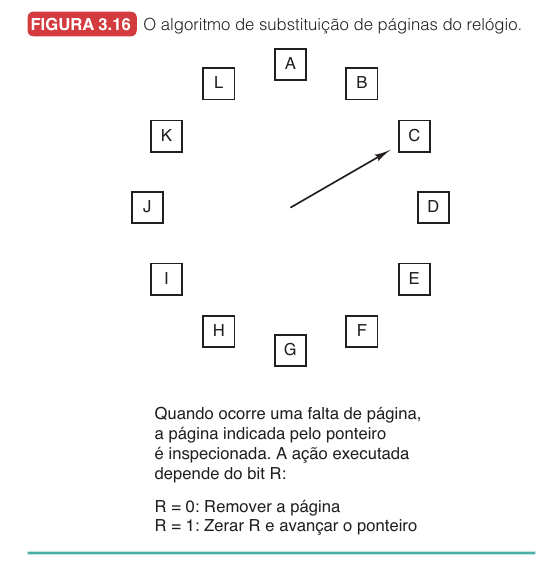

Introdução9.1
Hoje veremos como o sistema operacional cria a ilusão de uma memória grande, contínua e privada, mesmo quando a RAM física é menor, compartilhada e disputada por vários processos.
Na aula anterior, vimos que registradores de base e limite já ajudam a separar processos e proteger regiões de memória, e que o swapping permite tirar processos inteiros da RAM e colocá-los temporariamente em disco. Essas ideias resolvem parte do problema, mas ainda deixam uma limitação pesada: se um programa inteiro precisa caber na RAM para executar, programas grandes demais continuam impossíveis ou muito caros de alternar.
O problema central desta aula é este: como executar programas cujo espaço de endereçamento é maior que a memória física disponível, sem obrigar o programador a dividir tudo manualmente?
Esta aula usa como base o capítulo 3 do livro de Sistemas Operacionais. A progressão será: por que overlays eram trabalhosos, como a paginação resolve esse problema, como tabelas de páginas e TLB tornam a tradução viável, como páginas são substituídas, quais decisões de projeto importam e por que a segmentação aparece como uma abstração complementar. Os algoritmos serão trabalhados com passo a passo e exemplos.
Por que memória virtual existe9.2
A primeira motivação para memória virtual é simples, mas suas consequências são profundas. Programas crescem, bibliotecas crescem, e interfaces gráficas, navegadores, jogos, compiladores, bancos de dados e ambientes de desenvolvimento usam muito mais memória do que computadores antigos poderiam oferecer. O crescimento da memória física não elimina o problema, porque o software também cresce, e além disso, o sistema normalmente executa muitos processos ao mesmo tempo. Mesmo que cada processo caiba sozinho na RAM, a soma de todos pode exceder a memória física.
O swapping de processos inteiros é uma resposta possível, mas tem custo alto: mover um processo grande inteiro para o disco e depois trazê-lo de volta pode levar segundos. A memória virtual muda a unidade de transferência. Em vez de mover o processo inteiro, o sistema move pedaços do espaço de endereçamento, e essa diferença é o que torna tudo viável.
Antes da memória virtual, uma solução histórica era usar sobreposições, também chamadas de overlays: o programa era dividido em módulos, o programador decidia qual módulo ficava na memória em cada momento, e quando uma parte terminava, outra podia ser carregada por cima. Essa técnica funcionava, mas colocava o trabalho no lugar errado. O programador precisava prever quais partes do programa podiam coexistir e organizar manualmente a entrada e saída desses módulos, algo cansativo, sujeito a erro e pouco escalável.
A memória virtual automatiza essa ideia. O processo enxerga um espaço de endereçamento próprio, dividido em páginas. Algumas páginas estão na RAM; outras ficam apenas no disco até serem necessárias.
Imagine um editor de vídeo que possui um espaço virtual de $8$ GB.
A máquina tem apenas $4$ GB de RAM livre.
Sem memória virtual, o programa só poderia executar se tudo que ele precisa coubesse simultaneamente na RAM.
Com memória virtual, o sistema pode manter na RAM apenas as páginas realmente usadas no momento.
Se o editor está renderizando um trecho curto, páginas do código do renderizador, buffers recentes e estruturas da interface podem estar presentes.
Páginas de recursos não usados naquele instante podem continuar no disco.
O programa não precisa saber disso.
Ele continua gerando endereços virtuais como se seu espaço fosse inteiro e próprio.
Paginação e tradução de endereços9.3
A técnica mais comum para implementar memória virtual é a paginação: o espaço de endereçamento virtual é dividido em blocos de tamanho fixo chamados páginas, e a memória física é dividida em blocos do mesmo tamanho chamados quadros de página. O endereço gerado pelo programa é um endereço virtual, o endereço enviado à memória física é um endereço físico, e a tradução entre eles é feita pela MMU, a unidade de gerenciamento de memória.

Nessa figura, a CPU envia endereços virtuais para a MMU, que traduz esses endereços para endereços físicos e envia o resultado à memória. Se a página necessária não estiver presente, o sistema operacional entra em cena.
Vamos usar um exemplo pequeno para tornar a ideia visível. Suponha um computador com endereços virtuais de $16$ bits, o que dá um espaço virtual de $64$ KB, pois $2^{16} = 65536$ endereços. Se a memória física tem apenas $32$ KB e cada página tem $4$ KB, então temos $\frac{64\text{ KB}}{4\text{ KB}} = 16$ páginas virtuais e $\frac{32\text{ KB}}{4\text{ KB}} = 8$ quadros físicos. Logo, existem mais páginas virtuais do que quadros físicos, portanto nem todas as páginas podem estar na RAM ao mesmo tempo.

Na Figura 3.9, algumas páginas virtuais apontam para quadros físicos e outras aparecem com $X$, indicando que não estão presentes na memória física. No hardware real, essa informação aparece por meio de um bit presente/ausente.
Quando usamos páginas de $4$ KB, cada página contém $4096$ bytes. Como $4096 = 2^{12}$, os $12$ bits menos significativos do endereço representam o deslocamento dentro da página. Se o endereço virtual tem $16$ bits, sobram $4$ bits para o número da página virtual: $\text{endereço virtual} = \text{número da página virtual} + \text{deslocamento}$. Em termos de bits, $16\text{ bits} = 4\text{ bits de página} + 12\text{ bits de deslocamento}$. A página virtual é usada como índice na tabela de páginas; o deslocamento é copiado sem alteração; o que muda é o número da página, que é substituído pelo número do quadro físico.

Considere páginas de $4$ KB.
O endereço virtual $8196$ deve ser traduzido.
Primeiro, identificamos o tamanho da página.
$$ 4\text{ KB} = 4096\text{ bytes} $$
Depois calculamos a página virtual.
$$ \left\lfloor \frac{8196}{4096} \right\rfloor = 2 $$
Então o endereço está na página virtual $2$.
Agora calculamos o deslocamento.
$$ 8196 - 2 \cdot 4096 = 4 $$
Logo, o endereço virtual $8196$ significa: página virtual $2$, deslocamento $4$.
Se a tabela de páginas diz que a página virtual $2$ está no quadro físico $6$, então o endereço físico será:
$$ 6 \cdot 4096 + 4 = 24580 $$
A tradução final é:
$$ 8196_{virtual} \rightarrow 24580_{físico} $$
Falta de página9.3.1
Uma falta de página ocorre quando o processo acessa uma página virtual que não está presente na RAM. A MMU percebe isso pelo bit presente/ausente e, em vez de produzir um endereço físico, desvia para o sistema operacional.
O tratamento básico é:
- A CPU tenta acessar um endereço virtual.
- A MMU encontra a entrada da página virtual.
- O bit presente/ausente indica que a página não está na RAM.
- O hardware gera uma falta de página.
- O sistema operacional escolhe um quadro físico livre ou escolhe uma página vítima.
- Se a vítima foi modificada, ela é escrita de volta no disco.
- A página necessária é lida do disco para o quadro escolhido.
- A tabela de páginas é atualizada.
- A instrução que falhou é reiniciada.
Entradas da tabela de páginas9.4
A tabela de páginas mapeia páginas virtuais para quadros físicos. Cada entrada precisa guardar informações suficientes para a MMU decidir o que fazer, e a Figura 3.11 mostra a estrutura típica de uma dessas entradas.

O campo principal é o número do quadro de página, que permite substituir o número da página virtual pelo número do quadro físico. O bit presente/ausente indica se a página está na RAM: quando vale $1$, a tradução pode continuar; quando vale $0$, ocorre falta de página. Os bits de proteção determinam quais operações são permitidas: uma página pode ser somente leitura, leitura e escrita, ou leitura, escrita e execução, dependendo da arquitetura.
O bit modificada, também chamado de bit sujo, é ativado quando a página recebe uma escrita. Se uma página suja for removida da RAM, precisa ser gravada de volta no disco; se estiver limpa, pode ser descartada, pois sua cópia em disco ainda é válida. O bit referenciada indica que a página foi lida ou escrita recentemente e é essencial para vários algoritmos de substituição.
O bit de cache desabilitado aparece em arquiteturas que precisam impedir cache em páginas associadas a dispositivos de E/S. Se uma página representa registradores de um dispositivo, usar uma cópia antiga em cache pode produzir comportamento incorreto.
Acelerando a paginação com TLB9.5
A tradução precisa ser rápida porque acontece em praticamente todo acesso à memória. Buscar uma instrução, ler um operando ou escrever um resultado, tudo exige memória. Se cada acesso normal precisasse consultar a tabela de páginas na RAM antes de acessar o dado real, o custo poderia dobrar. Essa é a motivação para a TLB, ou Translation Lookaside Buffer: uma pequena memória associativa dentro da MMU que guarda traduções recentes de páginas virtuais para quadros físicos. Como programas tendem a usar repetidamente um pequeno conjunto de páginas, uma TLB pequena pode evitar muitas consultas à tabela completa.

Quando a MMU recebe um endereço virtual, ela procura o número da página virtual na TLB, comparando com todas as entradas em paralelo. Se a tradução está na TLB, ocorre um TLB hit e a MMU obtém o quadro físico imediatamente. Se a tradução não está na TLB, ocorre um TLB miss: nesse caso, a MMU ou o sistema operacional precisa buscar a entrada na tabela de páginas, e depois a tradução pode ser colocada na TLB para acessos futuros.
Também é importante distinguir tipos de ausência. Uma ausência leve ocorre quando a página está na RAM, mas não está na TLB, e resolver isso pode custar poucas instruções. Uma ausência completa ocorre quando a própria página não está na RAM, exigindo acesso ao disco, o que pode custar milhões de ciclos de CPU. A diferença prática, portanto, é enorme.
Um TLB miss significa que a tradução não está na TLB. Uma page fault significa que a página não está presente na RAM ou que o acesso não pode ser atendido como está. O TLB miss pode ser resolvido sem disco.
Tabelas de páginas para memórias grandes9.6
O segundo problema da paginação é o tamanho da tabela de páginas. Com endereços virtuais grandes e páginas pequenas, o número de páginas virtuais pode ser enorme. Em um espaço virtual de $32$ bits com páginas de $4$ KB, temos $\frac{2^{32}}{2^{12}} = 2^{20}$ páginas, mais de um milhão de entradas por processo. Em espaços de $64$ bits, o problema fica muito maior. Duas soluções clássicas aparecem aqui: tabelas de páginas multinível e tabelas de páginas invertidas.
Tabelas de páginas multinível9.6.1
A ideia da tabela multinível é não manter toda a tabela de páginas detalhada na memória se grandes regiões do espaço virtual não são usadas.

No exemplo de $32$ bits, o endereço virtual é dividido em três campos: $\text{PT1} = 10\text{ bits}$, $\text{PT2} = 10\text{ bits}$ e $\text{deslocamento} = 12\text{ bits}$. O campo PT1 escolhe uma entrada da tabela de nível 1, que aponta para uma tabela de nível 2. O campo PT2 escolhe uma entrada nessa tabela de nível 2, que finalmente aponta para o quadro físico. O ganho aparece quando boa parte do espaço virtual está vazia. Se o processo usa código no início, dados logo depois e pilha no topo, as regiões do meio podem não precisar de tabelas de nível 2.
Considere o endereço virtual $0x00403004$.
Nesse exemplo, ele é interpretado assim:
| Campo | Valor |
|---|---|
| PT1 | $1$ |
| PT2 | $3$ |
| Deslocamento | $4$ |
O passo a passo é:
- A MMU usa PT1 $= 1$ para acessar a tabela de nível 1.
- A entrada encontrada aponta para uma tabela de nível 2.
- A MMU usa PT2 $= 3$ nessa tabela de nível 2.
- A entrada encontrada fornece o quadro físico.
- O deslocamento $4$ é anexado ao quadro físico.
Se a entrada de nível 2 estiver ausente, ocorre falta de página.
Se a entrada estiver presente, o endereço físico é montado.
Tabelas de páginas invertidas9.6.2
Até aqui, toda tabela de páginas seguia a mesma lógica: para cada página virtual de cada processo, existe uma entrada dizendo em qual quadro físico ela está. Isso funciona, mas o tamanho da tabela cresce com o espaço virtual, e em arquiteturas de $64$ bits esse crescimento é proibitivo.
A tabela de páginas invertida resolve isso virando a pergunta de cabeça para baixo.
Na tabela tradicional, a pergunta é: a página virtual $X$ do processo $Y$ está em qual quadro físico? A resposta está indexada pelo número da página virtual.
| Página virtual | Quadro físico |
|---|---|
| $0$ | $12$ |
| $1$ | $5$ |
| $2$ | $18$ |
Cada processo possui sua própria tabela assim.
Na tabela invertida, a pergunta muda para: cada quadro físico da RAM pertence a qual processo e a qual página virtual? A tabela é indexada pelos quadros físicos, não pelas páginas virtuais.
| Quadro físico | Processo | Página virtual |
|---|---|---|
| $0$ | $P_1$ | $8$ |
| $1$ | $P_3$ | $2$ |
| $2$ | $P_1$ | $15$ |
Agora existe uma única tabela para o sistema inteiro, com exatamente uma entrada por quadro físico, e não uma entrada por página virtual de cada processo.
O que muda na prática é o seguinte. Na tabela tradicional, para traduzir o endereço $(P_1, 15)$, basta usar $15$ como índice e encontrar direto o quadro $2$. Na invertida, você tem o processo e a página virtual, mas precisa procurar qual quadro contém esse par. Sem uma TLB, essa busca seria lenta demais, porque exigiria varrer a tabela inteira a cada acesso. É por isso que tabelas invertidas dependem tanto da TLB: quando a tradução está na TLB, o acesso é instantâneo; quando não está, o sistema recorre a uma tabela de espalhamento para encontrar a entrada correspondente sem percorrer tudo.

| Tradicional | Invertida | |
|---|---|---|
| Indexada por | página virtual | quadro físico |
| Entradas por | página virtual de cada processo | quadro físico da RAM |
| Quantas tabelas | uma por processo | uma para o sistema |
| Tamanho depende de | espaço virtual | memória física |
| Tradução | usa número da página como índice direto | precisa buscar o par (processo, página) |
A grande vantagem da invertida é a economia de memória. Se a máquina tem espaço virtual de $64$ bits mas apenas $1$ GB de RAM, a tabela tradicional precisaria representar um número astronômico de páginas, enquanto a invertida precisa de apenas uma entrada por quadro físico, cerca de $2^{18}$ entradas para páginas de $4$ KB. A diferença é ordens de grandeza. Por isso, tabelas invertidas são comuns em arquiteturas de $64$ bits.
Substituição de páginas9.7
Quando ocorre uma falta de página e não há quadro físico livre, o sistema precisa escolher uma página para remover, e essa decisão é chamada de substituição de página. Se a página removida está limpa, ela pode ser descartada; se está suja, precisa ser escrita no disco antes de o quadro ser reutilizado.
A pergunta central é: qual página deve sair? Uma escolha ruim pode causar uma nova falta quase imediatamente; uma escolha boa tenta remover uma página que provavelmente não será usada tão cedo.
Algoritmo ótimo9.7.1
O algoritmo ótimo remove a página cujo próximo uso ocorrerá mais tarde no futuro: se uma página nunca mais for usada, ela é a melhor vítima possível. O problema é óbvio: o sistema operacional real não conhece o futuro. Mesmo assim, esse algoritmo é útil como referência para comparar algoritmos implementáveis.
Passo a passo do ótimo:
- Quando ocorre uma falta, observe as páginas atualmente na memória.
- Para cada página, descubra quando ela será referenciada novamente no futuro.
- Escolha a página com uso mais distante.
- Se alguma página nunca mais for usada, escolha essa.
- Carregue a página faltante no quadro liberado.
O ótimo não é usado em sistemas reais, mas serve para avaliar outros algoritmos. Se um algoritmo real fica muito perto do ótimo em simulações, talvez não valha a pena buscar algo muito mais complexo.
NRU: não usada recentemente9.7.2
O NRU explora dois bits que o hardware já mantém em cada entrada da tabela de páginas. O bit $R$ (referenciada) é ligado sempre que a página é lida ou escrita. O bit $M$ (modificada) é ligado apenas quando a página recebe uma escrita. O sistema periodicamente, a cada interrupção de relógio, limpa o bit $R$ de todas as páginas, mas não limpa o bit $M$, porque a informação de sujeira é essencial para decidir se a página precisa ser salva em disco antes de sair da RAM.
O NRU classifica cada página em uma de quatro classes, baseando-se nos valores atuais desses dois bits:
| Classe | $R$ | $M$ | Significado | O que significa na prática |
|---|---|---|---|---|
| 0 | $0$ | $0$ | não referenciada e limpa | ninguém usou e não precisa gravar |
| 1 | $0$ | $1$ | não referenciada e suja | ninguém usou recentemente, mas foi modificada antes |
| 2 | $1$ | $0$ | referenciada e limpa | foi usada recentemente e está limpa |
| 3 | $1$ | $1$ | referenciada e suja | foi usada recentemente e está modificada |
A classe 1 merece atenção porque parece contraditória: como uma página pode estar suja mas não referenciada? A resposta está na interrupção de relógio. Imagine que uma página de classe 3 (referenciada e suja) seja usada intensamente. Quando a interrupção de relógio chega, o sistema limpa o bit $R$, mas deixa o bit $M$ intacto. A página cai para a classe 1. Isso é útil porque distingue páginas que estavam ativas há pouco (e ainda estão sujas) daquelas que estão ativas agora.
Quando ocorre uma falta de página, o NRU varre as páginas residentes e escolhe uma página aleatória da classe de menor número que não esteja vazia. A lógica é: prefira remover páginas que não foram referenciadas (classes 0 e 1) e, entre as não referenciadas, prefira as limpas (classe 0), porque páginas sujas exigem escrita em disco antes da remoção. Remover uma página de classe 3, referenciada e suja, é a pior escolha.
Passo a passo do NRU:
- Em uma falta de página, examine as páginas residentes.
- Classifique cada página usando os bits $R$ e $M$.
- Procure a menor classe não vazia (0, depois 1, depois 2, depois 3).
- Escolha uma página aleatória dentro dessa classe.
- Remova essa página e carregue a página faltante.
FIFO: primeiro a entrar, primeiro a sair9.7.3
O FIFO mantém as páginas em ordem de chegada à memória: quando precisa remover uma página, remove a mais antiga. É simples, mas pode remover uma página muito usada, pois idade não é o mesmo que inutilidade.
Passo a passo do FIFO:
- Mantenha uma fila de páginas na memória.
- A página mais antiga fica na frente da fila.
- A página mais recente fica no fim da fila.
- Em uma falta com memória cheia, remova a página da frente.
- Coloque a nova página no fim da fila.
Segunda chance9.7.4
O algoritmo de segunda chance melhora o FIFO olhando o bit $R$ da página mais antiga. Se $R = 0$, a página sai. Se $R = 1$, ela recebe uma segunda chance: o sistema zera $R$ e move essa página para o fim da fila.

Passo a passo da segunda chance:
- Olhe a página mais antiga da fila.
- Se $R = 0$, remova essa página.
- Se $R = 1$, zere $R$.
- Mova a página para o fim da fila.
- Continue examinando a próxima página antiga.
- Repita até encontrar uma página com $R = 0$.
Relógio9.7.5
O algoritmo do relógio implementa a mesma ideia da segunda chance, mas sem ficar movendo páginas em uma fila. Ele organiza os quadros em uma lista circular, com um ponteiro que percorre os quadros como o ponteiro de um relógio.

Passo a passo do relógio:
- O ponteiro aponta para uma página candidata.
- Se $R = 0$, essa página é removida.
- A nova página entra no quadro liberado.
- O ponteiro avança.
- Se $R = 1$, o sistema zera $R$.
- O ponteiro avança para a próxima página.
- O processo continua até encontrar $R = 0$.
Questões9.8
1. Qual problema principal levou ao desenvolvimento da memória virtual?
- A) Eliminar totalmente o uso de disco.
- B) Permitir que programas e conjuntos de processos excedam a RAM física disponível.
- C) Impedir a execução de múltiplos processos.
- D) Substituir completamente a proteção por base e limite.
2. Com páginas de $4$ KB, calcule a página virtual e o deslocamento do endereço virtual $12300$.
3. O que é uma falta de página? Ela sempre indica erro do programa?
4. Diferencie os bits $R$ e $M$ de uma entrada da tabela de páginas.
5. Explique por que a TLB melhora o desempenho da paginação.
6. Descreva o algoritmo ótimo de substituição de páginas e explique por que ele não é implementável em sistemas reais.
7. Por que FIFO pode ter desempenho ruim mesmo sendo simples? Como o algoritmo de segunda chance tenta resolver isso?
8. O que é conjunto de trabalho e como ele se relaciona com thrashing?
9. O que é copy-on-write e por que ele melhora o desempenho após fork?
10. Explique a diferença conceitual entre paginação e segmentação.
1. B.
2. Como $4$ KB $= 4096$ bytes, $\lfloor 12300/4096 \rfloor = 3$. O início da página $3$ é $12288$, então o deslocamento é $12$.
3. É o evento em que uma página necessária não está presente na RAM ou não pode ser acessada como solicitado. Nem sempre é erro, pois pode ser apenas uma página válida que precisa ser carregada.
4. $R$ indica que a página foi referenciada (lida ou escrita). $M$ indica que a página foi modificada por escrita e, portanto, está suja.
5. A TLB guarda traduções recentes de páginas virtuais para quadros físicos, evitando consultar a tabela de páginas completa a cada acesso à memória.
6. Ele remove a página cujo próximo uso está mais distante no futuro. Não é implementável porque o sistema não conhece a sequência futura de referências.
7. FIFO remove a página mais antiga, mas a mais antiga pode continuar sendo muito usada. A segunda chance verifica o bit $R$: se a página antiga foi referenciada, ela recebe nova chance e não é removida imediatamente.
8. Conjunto de trabalho é o conjunto de páginas usado recentemente por um processo. Se ele não cabe na RAM, o processo sofre faltas contínuas e entra em thrashing.
9. É compartilhar páginas de dados entre pai e filho marcadas como somente leitura após fork. A cópia física só ocorre na primeira escrita, evitando copiar páginas que nunca são alteradas.
10. Paginação divide o espaço em páginas de tamanho fixo, normalmente invisível ao programador. Segmentação divide em regiões lógicas de tamanho variável, como código, pilha e tabelas, visíveis como unidades independentes.
Próximos passos9.9
Vimos como a memória virtual permite executar processos com espaços de endereçamento maiores que a RAM física, usando paginação, tabelas de páginas, TLB, algoritmos de substituição, políticas de projeto e segmentação. Na próxima parte da disciplina, essa base será útil para entender como sistemas de arquivos e E/S dependem da mesma tensão entre abstração, desempenho, cache e persistência.